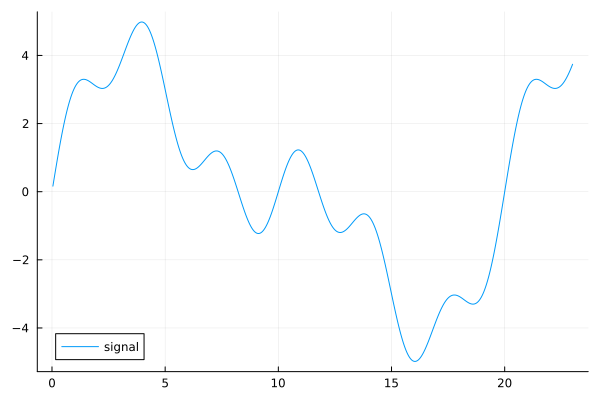
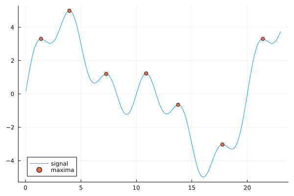
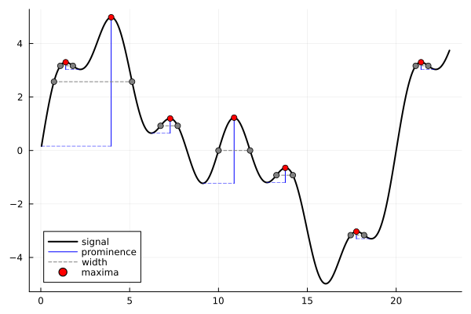

Peaks.jl
Installation
Peaks.jl can be installed from the Julia REPL by running
] add Peaks Activating new project at `/tmp/jl_xjS2FE`
Resolving package versions...
Updating `/tmp/jl_xjS2FE/Project.toml`
[18e31ff7] + Peaks v0.5.2
Updating `/tmp/jl_xjS2FE/Manifest.toml`
[34da2185] + Compat v4.14.0
[18e31ff7] + Peaks v0.5.2
[aea7be01] + PrecompileTools v1.2.1
[21216c6a] + Preferences v1.4.3
[3cdcf5f2] + RecipesBase v1.3.4
[ade2ca70] + Dates
[de0858da] + Printf
[9a3f8284] + Random
[ea8e919c] + SHA v0.7.0
[fa267f1f] + TOML v1.0.3
[cf7118a7] + UUIDs
[4ec0a83e] + UnicodeGetting started
Finding peaks

To find the peaks in your data you can use the findmaxima function:
julia> indices, heights = findmaxima(x)(indices = [35, 99, 182, 272, 344, 444, 535], heights = [3.3001180343485115, 4.982232717207902, 1.1970724634359273, 1.2276270625137884, -0.64962265601777, -3.0322485466891154, 3.300118034348509], data = [0.1632851160646655, 0.32610451181030864, 0.4879949200150502, 0.6484979658187734, 0.8071625784012266, 0.9635473614762452, 1.1172229092385426, 1.2677740547092151, 1.4148020378099078, 1.5579265809513112 … 3.239424931527592, 3.282055521419697, 3.3284358209806943, 3.3784081950151275, 3.431786304282729, 3.4883561669665792, 3.5478773815030964, 3.610084503811208, 3.6746885710779362, 3.741378763422677])
When the peaks are plotted over the data, we see that all the local maxima have been identified.

Peak characteristics
Two commonly desired peak characteristics can be determined using the peakproms and peakwidths functions:
julia> indices, proms = peakproms(indices, x)([35, 99, 182, 272, 344, 444, 535], [0.26786948765939567, 4.818947601143236, 0.5474498074181583, 2.455254125027577, 0.5474498074181564, 0.26786948765939345, 0.2678694876593939])julia> indices, widths, edges... = peakwidths(indices, x, proms)([35, 99, 182, 272, 344, 444, 535], [17.62631562198535, 109.89208862768857, 24.14354518850965, 44.44393283928167, 23.09112550486367, 18.893643387694567, 17.62631562198544], [27.488338944406614, 18.511010648993224, 168.4689065713737, 250.0, 331.5310934286263, 435.9917020459134, 527.4883389444066], [45.11465456639196, 128.4030992766818, 192.61245175988336, 294.4439328392817, 354.62221893349, 454.885345433608, 545.114654566392])
Mutating bang ('!') functions are available for peakproms (e.g. peakproms!), peakwidths, and peakheights.
Peaks NamedTuple & pipable API
There are Peaks.jl functions that bundle the peaks, peak characteristics, and signal into a convenient NamedTuple:
julia> pks = findmaxima(x);julia> pks = peakproms(pks);julia> pks = peakwidths(pks)(indices = [35, 99, 182, 272, 344, 444, 535], heights = [3.3001180343485115, 4.982232717207902, 1.1970724634359273, 1.2276270625137884, -0.64962265601777, -3.0322485466891154, 3.300118034348509], data = [0.1632851160646655, 0.32610451181030864, 0.4879949200150502, 0.6484979658187734, 0.8071625784012266, 0.9635473614762452, 1.1172229092385426, 1.2677740547092151, 1.4148020378099078, 1.5579265809513112 … 3.239424931527592, 3.282055521419697, 3.3284358209806943, 3.3784081950151275, 3.431786304282729, 3.4883561669665792, 3.5478773815030964, 3.610084503811208, 3.6746885710779362, 3.741378763422677], proms = [0.26786948765939567, 4.818947601143236, 0.5474498074181583, 2.455254125027577, 0.5474498074181564, 0.26786948765939345, 0.2678694876593939], widths = [17.62631562198535, 109.89208862768857, 24.14354518850965, 44.44393283928167, 23.09112550486367, 18.893643387694567, 17.62631562198544], edges = [(27.488338944406614, 45.11465456639196), (18.511010648993224, 128.4030992766818), (168.4689065713737, 192.61245175988336), (250.0, 294.4439328392817), (331.5310934286263, 354.62221893349), (435.9917020459134, 454.885345433608), (527.4883389444066, 545.114654566392)])
Mutating functions are also available for the NamedTuple functions; the vectors within the NamedTuple are mutated and re-used in the returned tuple. The NamedTuple functions can also be piped:
julia> pks = findmaxima(x) |> peakproms!(;strict=false) |> peakwidths!(; max=100)(indices = [35, 182, 272, 344, 444, 535], heights = [3.3001180343485115, 1.1970724634359273, 1.2276270625137884, -0.64962265601777, -3.0322485466891154, 3.300118034348509], data = [0.1632851160646655, 0.32610451181030864, 0.4879949200150502, 0.6484979658187734, 0.8071625784012266, 0.9635473614762452, 1.1172229092385426, 1.2677740547092151, 1.4148020378099078, 1.5579265809513112 … 3.239424931527592, 3.282055521419697, 3.3284358209806943, 3.3784081950151275, 3.431786304282729, 3.4883561669665792, 3.5478773815030964, 3.610084503811208, 3.6746885710779362, 3.741378763422677], proms = [0.26786948765939567, 0.5474498074181583, 2.455254125027577, 0.5474498074181564, 0.26786948765939345, 0.2678694876593939], widths = [17.62631562198535, 24.14354518850965, 44.44393283928167, 23.09112550486367, 18.893643387694567, 17.62631562198544], edges = [(27.488338944406614, 45.11465456639196), (168.4689065713737, 192.61245175988336), (250.0, 294.4439328392817), (331.5310934286263, 354.62221893349), (435.9917020459134, 454.885345433608), (527.4883389444066, 545.114654566392)])
Be aware that the NamedTuple functions allocate more memory than the functions with direct/explicit arguments. If maximum performance is needed, mutating functions (e.g. peakproms!, etc) and/or the direct/non-NamedTuple functions are a better choice.
Plotting
The peaks, prominences, and widths can be visualized all together using the Plots.jl recipe plotpeaks:
using Plots
plotpeaks(t, x; peaks=indices, prominences=true, widths=true)